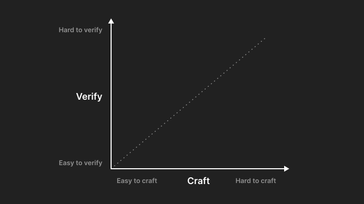
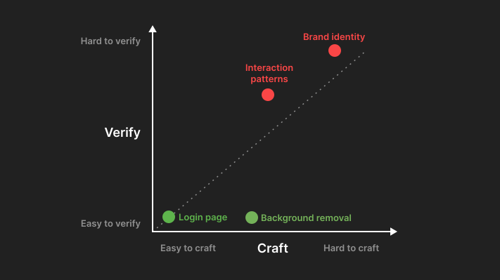
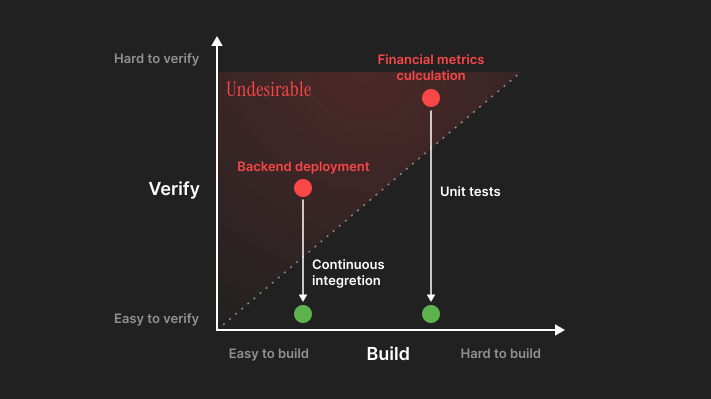
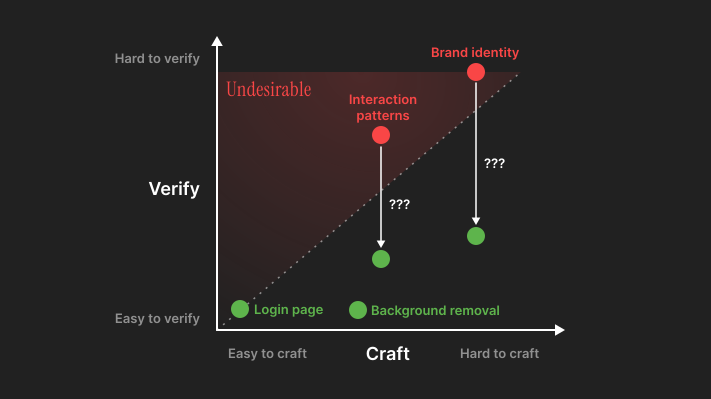
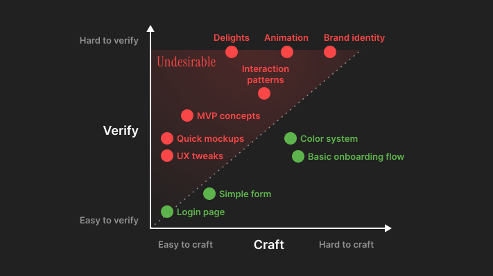
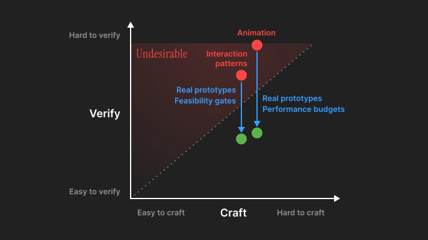
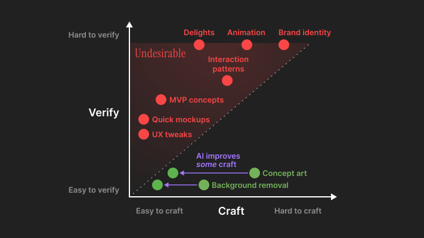
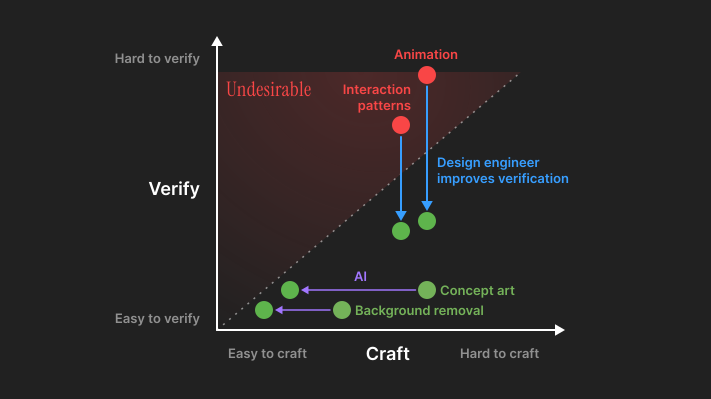
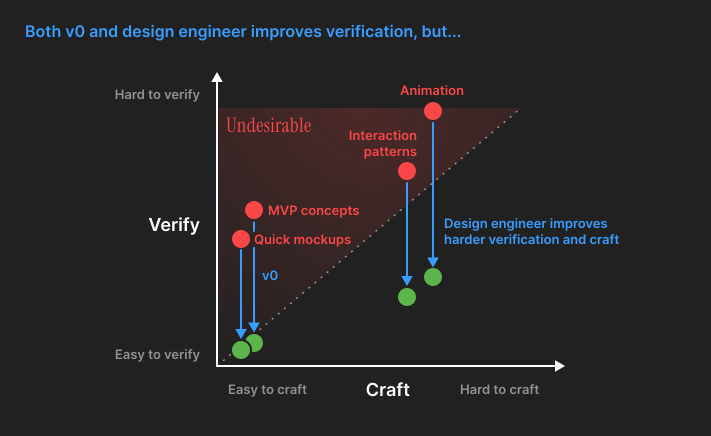
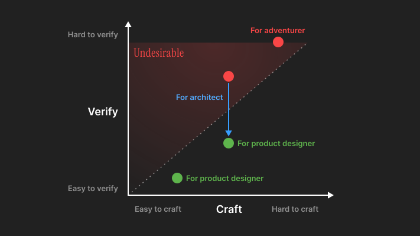

Verification asymmetry
The Two-Axis Framework
Picture this: you're in a design review, and someone asks, "let's do another round." The designer smiles and has no choice. Everyone has opinions, but no proof. This scenario plays out thousands of times daily across design teams worldwide, revealing a fundamental problem in how we approach design work.
Why do some design decisions feel impossibly subjective while others seem straightforward? Why do many designers struggle through stakeholder meetings while engineers can remain largely async? It comes down to two axes: how hard something is to craft, and how hard it is to verify.

Consider a login page - it's easy to craft (established patterns exist) and easy to verify (users either can or cannot log in). Now consider a brand identity - it's hard to craft (requiring deep creative work) and even harder to verify (many stakeholders involved, success only somewhat correlates to long-term market performance, which itself suffers from infinite colliding factors).

This difference isn't just academic - it fundamentally shapes how designers work, what designers value.
Design's core challenge isn't craft - it's verification.
Tackling this verification asymmetry is why the emergence of design engineers, not AI, is the most important shift in design practice today.
Verification Asymmetry in Design vs. Engineering
Difficulty in verification is undesirable.
Take software engineering as an example. It has never been just about writing fancy code - it's also about verifying code quality. Continuous integration turns "it works on my machine" into "it works everywhere." Unit tests transform "I think this works" into "I can prove this works."

However, design lacks verification infrastructure to remove the unwanted difficulty.
When an engineer says a feature is complete, they can point to passing tests, performance benchmarks, and error-free deployments. When a designer says a design is complete, they often can only point to stakeholder approval. It is a far weaker form of verification, because it is not based on a tangible, interactive, working product that people have used.

This undesirable verification gap creates compound costs, blocking quality and efficiency:
- Delayed decisions: Without clear verification criteria, debates drag on
- Opinion-based battles: Whoever argues loudest or has the most seniority wins
- Fear of iteration: When you can't verify improvements, change becomes risky
- Talent misallocation: Designers spend energy in meetings defending decisions rather than crafting
- Design industry challenges: Seasoned designers produce compelling designs with taste (a trained instinct), but students and juniors struggle to justify and learn from decision decisions
Mapping the Design Landscape
Let's map some common design work across our two axes:

Traditionally, designers derive their value and mature from tackling problems with increasing difficulty in either one or both axis.
Notice something crucial: most design work are hard to verify and suffers from undesired difficulty. This is why design always feels so subjective and why designers often struggle to ship fast, improve product quality, and drive impact.
Design Engineer Improves Verification
Design engineers aren't just designers who code or developers who care about pixels. Their core value is improving verification practices with privileged information (software engineering knowledge). It makes design easier and faster. Here are some examples:
-
Real prototypes
Instead of designers only asking stakeholders "how does this new navigation feel to users?", design engineers work with designers to build it and get buy-ins. Teams can click through it. Employees can dogfood it.
-
Performance Budgets
That gorgeous animation might delight users - or it might bring bad user reviews due to lag on older devices. Together with other engineers, design engineers establish performance budgets that make these decisions explicit and back them.
-
Technical Feasibility Gates
"Can we build this? How to build this?" often comes too late. Design engineers surface technical constraints early, turning them into design opportunities rather than last-minute compromises.

AI Disrupted Design In Unexpected Way
The most-used AI features by product designers - from layer renaming to background removal to rewriting to image gen - all target the craft axis. They make some craft easier but not verification - the hardest part of design.

This aligns with the AI's nature. AI always excels at problems with clear verification criteria. AI is best at generating code that either passes tests or doesn't. Software engineering tasks has been made dramatically easier to verify over the past decades (with lint, tests, containerization, metrics, …) so AI spreads out so fast for them.
It explains a paradox: designer AI tools all have their hype, yet nothing revolutionizes design the way many imagined, let alone "replace designers."
The above creates an interesting dynamic: product designers attempting to leverage AI for typical design tasks find themselves no better equipped. AI doesn't spit out good UI and UX. Meanwhile, AI makes design engineers more powerful than ever by making code cheaper to produce, so they now better accelerate verification, making design easier and faster for their teams.
The most valuable and long-term impact of AI on the design industry is the rise of design engineers.

Some people may ask "wait, how about v0/Lovable/Bolt"? Well, they are a good place to start with, a quick peek into design engineering.
If you found yourself in love with them, you might be interested in design engineering! Though the biggest value gain only starts when you are equipped to solve harder verification and craft without those tools. So don't get addicted to cheap codes.
Imagine, prototype 2 variations of layout animations for a complex, multi-step stock-order flow with a designer, in an existing front-end, ship internally, iterate based on the feedback from employees dogfooding.
Design engineer is able to plug themselves into the existing large codebase, business context, and team workflow. They solve these harder verifications that v0 couldn't get in yet. Craft wise, it is also a huge challenge to finetune animation easings and timings - beyond what v0 could handle.

Design engineering reframes the eternal "should designers code?" debate. It's on a very surface level. The actual question is:
How do we make design decisions more verifiable?
In the past, sometimes the answer is code. Sometimes it's better research methods. Sometimes it's new metrics. Right now in 2025, more people are coming to the agreement that answer is code.
Future
AI is not replacing designers any time soon, but it boosted the emergence of design engineers. Seasoned designers should start thinking about the 2 directions to advance in (optionally adding the leadership layer on top):
- Adventurer, focus and conquer the truly hard crafts and verifications - the ones that require the very best human creativity, empathy, and vision
- Architect, push the problems out from verification asymmetry, let other designers reach their full potential
